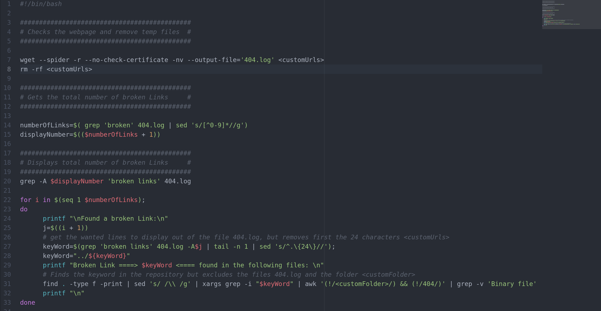
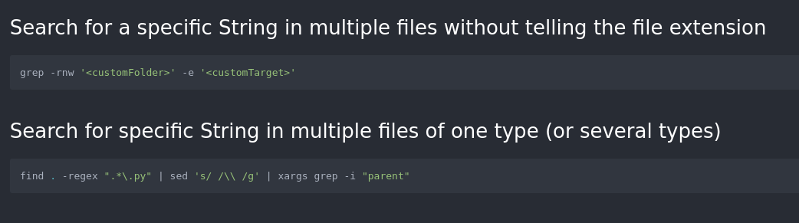
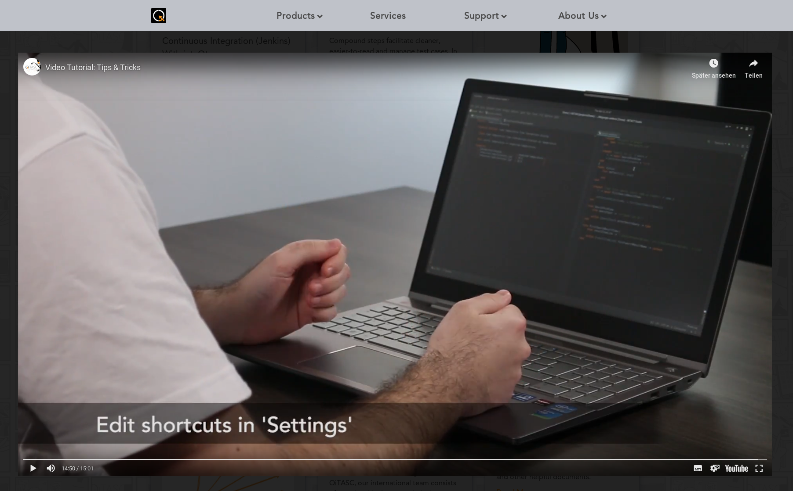
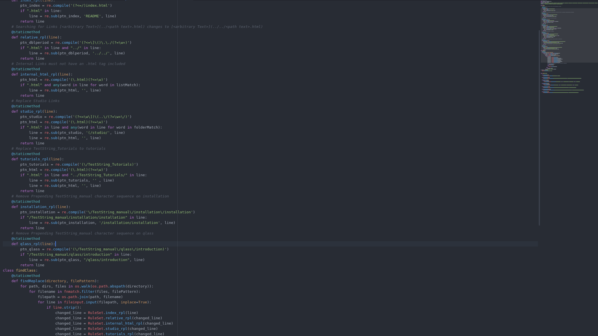
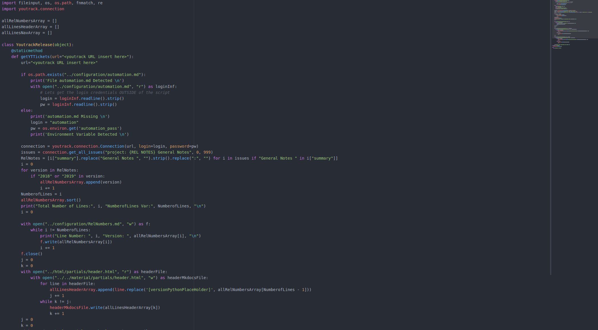
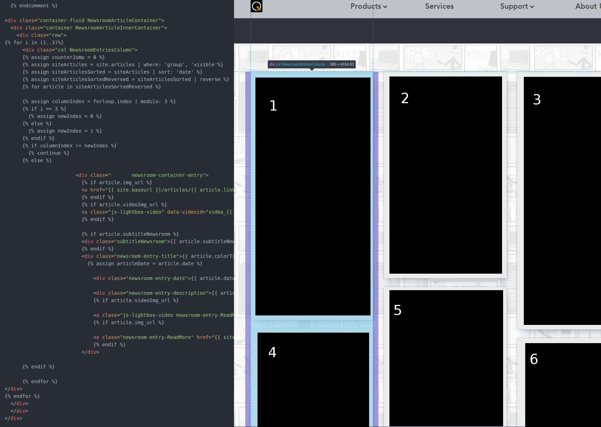
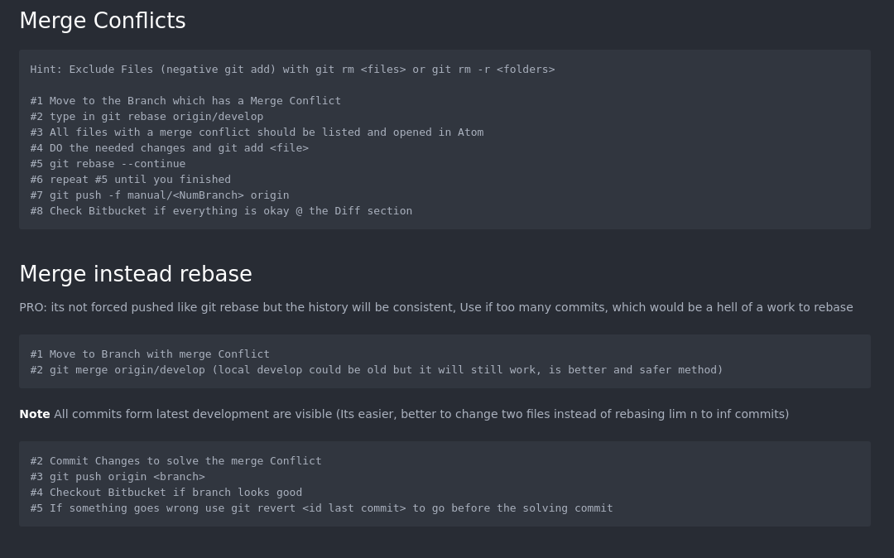
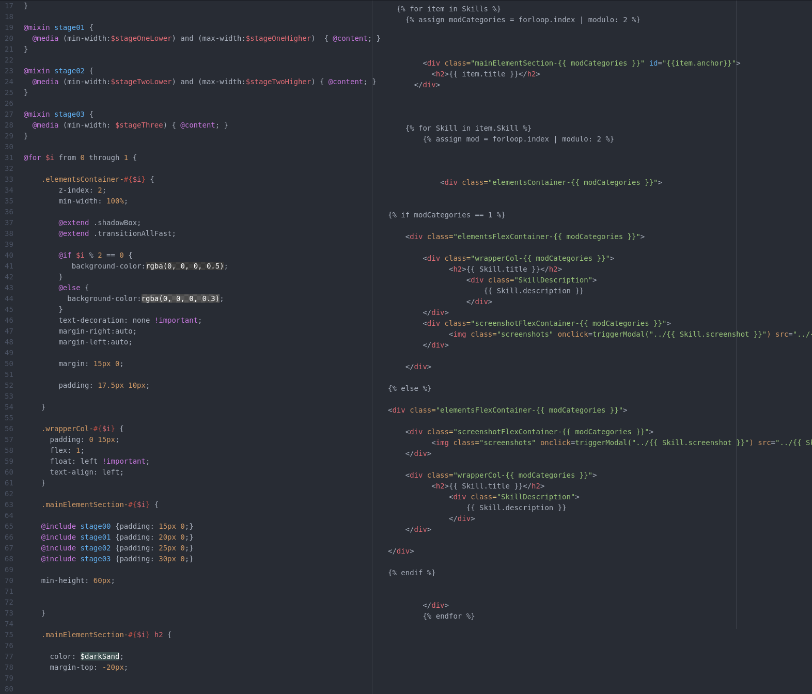
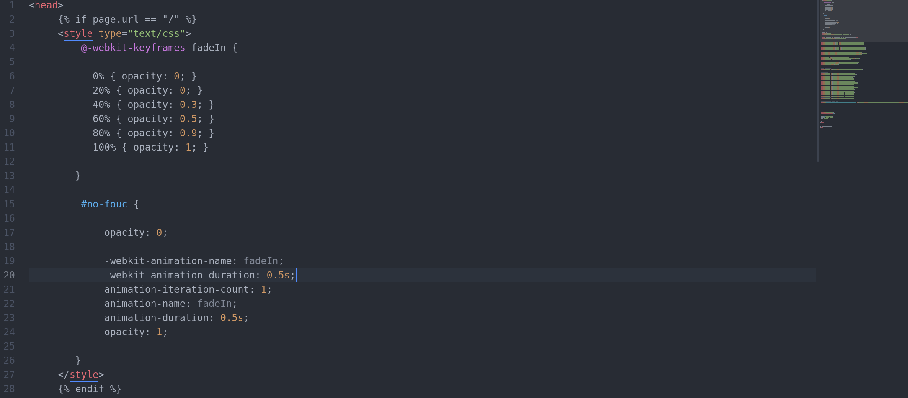

Jas Parkety
My name is Lukas H. and I am a Front End Developer living and working in Vienna.
You are welcome to take a glimps at my skillset or visit one of my profiles:
You are welcome to take a glimps at my skillset or visit one of my profiles:


Bash
Dead Link Checker
There are a lot of tools to find dead links, but knowing grep, find etc. can customize a first level test on local machines.

Advanced Search
Another example of basic bash usage.

Examples of few JS/jQuery Code Snippets

Get a nice tosrus API for embedded youtube
The main task here was to provide a nice wrapper with a z-index that overlaid the whole page except the navigation. As well some recommandations by youtube were switched off and after the video was finished a nice opacity transition took place.
Python Test Driven Development & Tool Snippets
Fileserver HTML tag handler
In some cases a team wants to deploy different kind of documentation. The Work Flow should stay the same. Using mutliple tools to visualize text documents may need some coding to be able to use the full power of several tools.

Youtrack API Communiation
The following Code Snippet was used to read the latest Release Version and to implement it on a webpage. It was also a preparation for a version controlled documentation.

Jekyll Liquid Language

Generating a 3 column automated responsive and alligned Newspaper Front End
In Jekyll there are several ways to align an element in a parent's column. In this particular example the goal was to insert an element in the first column if its modulo was 0, second if its modulo was 1 and third if its modulo was 2.
Git of your feet
Resolve Mergeconflict the best way
A good way to solve quick&dirty merge conflicts with git is via the command rebase. Unfortunately, this will overwrite the history. This is not how git is supposed to be used. The Screenshot shows a more consistent way by overwriting the branch and therefor not erasing the history.

CSS/SCSS

Responsive mixin functions & Loopig in SCSS
Just a nice example how I like to use scss to create dynamic layouts.

Preventing FOC
A very small code snippet which made a fast flash on the landing page to prevent FOC on index only.
×